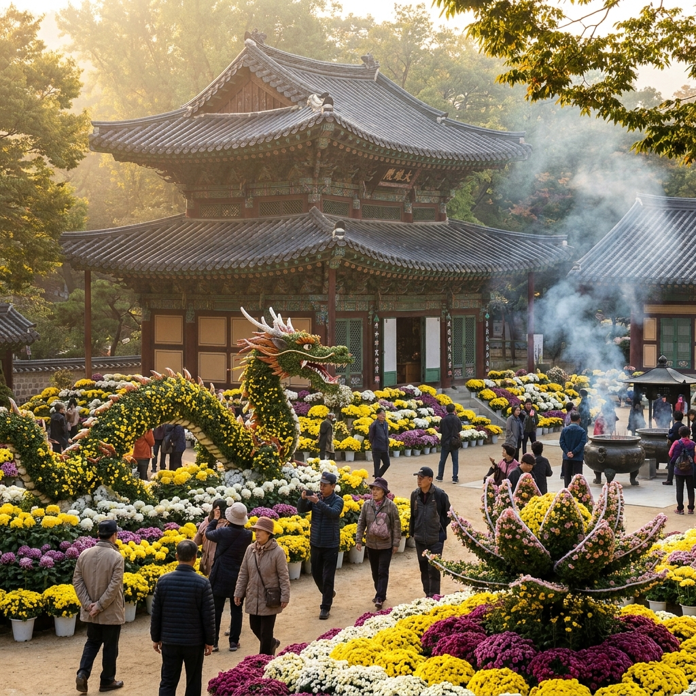
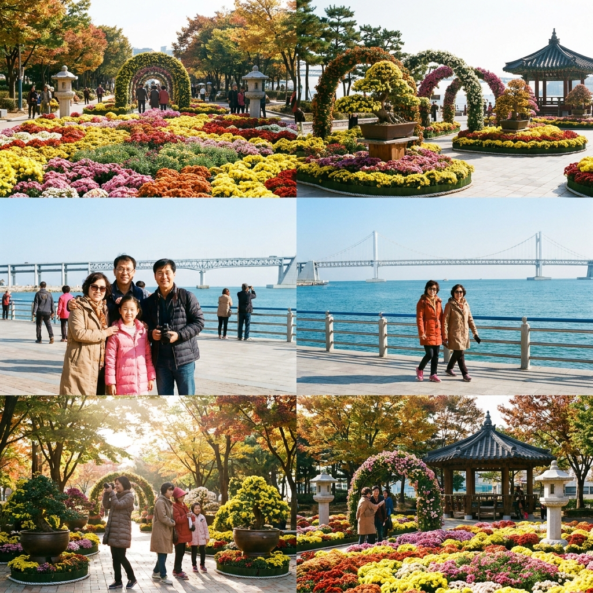

2026 전국 국화 축제 언제 어디서 열리나 — 서울 조계사·함평 국향대전·익산 일정과 예매 할인 비교표
가을의 깊은 향기를 온몸으로 느낄 수 있는 전국 국화 축제가 10월 중순부터 전국 각지에서 화려한 개막을 알립니다.
도심 속 고즈넉한 사찰 경내를 황금빛 국화로 수놓는 서울 조계사 국화화엄축제가 10월 13일 개막하는 것을 필두로, 전남 함평의 대한민국 국향대전, 전북 익산의 천만송이 국화축제, 경남 창원의 마산가고파국화축제까지 지역마다 독창적인 가을꽃 대향연이 펼쳐집니다.
특히 함평 국향대전 등 주요 유료 축제는 10% 사전 예매 할인 제도를 운영하고 있어 미리 챙기면 요금을 아낄 수 있으며, 주요 축제장별 개막 일정과 주차장 위치, 혼잡 시간대 회피 팁까지 10월 가을 나들이를 위한 필수 정보를 한눈에 비교해 드립니다.

도심 속 사찰을 형형색색으로 장엄한 조계사 국화화엄축제 / AI 제작 이미지
01 | 2026년 전국 가을 국화 축제 개막 일정과 핵심 포인트 요약
국화는 서리가 내리는 늦가을까지 모진 비바람을 견디며 가장 늦게 피어나 은은하고 깊은 향을 뿜어내는 가을의 대표 화초입니다.
2026년 전국 국화 축제는 10월 중순부터 11월 초순까지 약 3~4주간 전국 주요 거점 도시에서 일제히 개막합니다.
축제마다 특색이 뚜렷하여 서울 조계사는 도심 속 힐링 사찰 전시를, 함평 국향대전은 대규모 국화 분재와 초대형 국화 조형물을, 익산 천만송이 국화축제는 야간 조명과 로컬 문화 연계를, 마산가고파국화축제는 쪽빛 남해 바다와 어우러진 해안 산책로를 강점으로 내세웁니다.
대다수 축제장이 대중교통 환승 편의를 제공하거나 주말 임시 셔틀버스를 증차하여 관람객 편의를 돕고 있으므로, 본인의 거주지와 여행 동선에 맞는 축제장을 선택하면 알찬 가을 주말을 보낼 수 있습니다.
02 | 서울 도심 속 국화 향기 — 조계사 국화화엄축제 10월 13일 개막 일정과 관람 안내
멀리 지방까지 가지 않고도 서울 한복판에서 완벽한 가을 정취를 느낄 수 있는 대표 행사는 바로 종로 조계사의 '국화화엄축제'입니다.
2026년 조계사 국화화엄축제는 10월 13일(화) 개막식을 시작으로 11월 중순까지 약 한 달여간 조계사 경내 전체에서 무료로 진행됩니다.
대웅전 앞마당과 일주문 진입로, 백송나무 주변이 수천 분의 국화 화분과 국화로 정교하게 엮어 만든 코끼리, 용, 부처님 등 대형 불교 테마 조형물로 장엄하게 꾸며집니다.
지하철 1호선 종각역(2번 출구)이나 3호선 안국역(6번 출구)에서 도보 5분 거리로 접근성이 극도로 뛰어나 점심시간 직장인 산책이나 인사동·삼청동 나들이와 연계하기에 최적입니다.
별도의 입장료나 예약이 필요 없으며, 해 질 녘 은은한 연등 조명과 함께 켜지는 야간 국화 야경은 낮과는 또 다른 신비롭고 고즈넉한 힐링을 선사합니다.
03 | 대한민국 국향대전(전남 함평) — 10월 23일 개막 및 사전예매 10% 할인 방법
국내 최대 규모와 최고의 작품성을 자랑하는 가을 국화 축제의 대명사는 바로 전남 함평의 '2026 대한민국 국향대전'입니다.
올해 국향대전은 2026년 10월 23일(금)부터 11월 8일(일)까지 17일간 함평 엑스포공원 일원에서 대단위로 펼쳐집니다.
'신화의 국화동산'을 주제로 대형 국화 성곽 조형물, 국화 분재 작품 전시관, 국화랜드 탈출 체험 등 수준 높은 전시 프로그램과 유명 가수 초청 공연이 매일 진행됩니다.
특히 국향대전은 9월 23일부터 10월 22일까지 축제 전용 홈페이지 및 공식 예매처에서 10% 사전 예매 할인을 제공합니다.
🎟️ 함평 국향대전 사전 예매 할인 혜택
· 예매 기간 : 2026년 9월 23일 ~ 10월 22일 (개막 전날 마감)
· 할인율 : 일반 입장료 정상가 대비 10% 할인
· 예매처 : 함평축제관광재단 공식 홈페이지 및 주요 온라인 티켓 예매 사이트
· 쿠폰 환급 : 입장권 구매 시 행사장 및 함평 관내에서 사용 가능한 함평사랑상품권 일부 환급
현장 매표소의 긴 발권 대기 줄을 건너뛰고 모바일 바코드로 신속하게 게이트를 통과할 수 있으므로, 방문 계획이 확정되었다면 사전 예매 기간을 놓치지 않는 것이 좋습니다.
04 | 전북 익산 천만송이 국화축제 — 중앙체육공원 분재 전시와 야간 라이팅 관람 포인트
호남권의 또 다른 대표 축제인 '익산 천만송이 국화축제'는 2026년 10월 23일(금)부터 11월 1일(일)까지 10일간 익산 중앙체육공원에서 성대하게 열립니다.
익산 국화축제의 핵심 자랑거리는 수십 년 경력의 화훼 명장들이 공들여 길러낸 국화 분재 경진대회 출품작들로, 기암괴석과 고목에 국화를 접목한 예술 분재의 진수를 감상할 수 있습니다.
무료 관람 구역과 유료 특별 전시관으로 나뉘어 운영되며, 유료관 입장권(3,000원 선)은 전액 익산 로컬푸드 쿠폰으로 환급되어 꽃 화분이나 지역 농산물로 교환할 수 있습니다.
해가 진 뒤에는 수만 개의 LED 조명과 미디어 파사드가 어우러진 '국화 빛의 정원'이 화려하게 밝혀져 낭만적인 밤 산책을 즐기려는 연인들의 발길이 이어집니다.
05 | 경남 창원 마산가고파국화축제 — 해양누리공원 바다 국화길과 드론쇼 일정
우리나라 국화 상업 재배의 발원지인 경남 창원 마산에서는 바다를 배경으로 펼쳐지는 '마산가고파국화축제'가 10월 하순 3·15해양누리공원 일대에서 개최됩니다.
푸른 마산항 앞바다의 시원한 바닷바람을 맞으며 해안 산책로를 따라 조성된 수억 송이의 국화 터널을 걷는 색다른 경험을 제공합니다.
단일 줄기에서 수백 송이의 꽃을 피워내는 '다륜대작' 등 세계적인 수준의 국화 재배 기술이 집약된 초대형 작품들이 전시되어 감탄을 자아냅니다.
주말 밤에는 마산 앞바다 상공에서 펼쳐지는 멀티미디어 드론 라이트 쇼와 해상 불꽃쇼가 국화 향기와 어우러져 장엄한 볼거리를 연출합니다.
06 | 전국 4대 국화 축제장별 입장료·주차 요금·편의시설 상세 비교표
전국 주요 국화 축제의 핵심 제원과 관람 조건을 한눈에 비교할 수 있도록 표로 정리해 드립니다.
| 축제 명칭 |
개최 기간 |
장소 |
입장료 |
주차 요금 |
핵심 관람 포인트 |
| 조계사 국화화엄축제 |
10.13 ~ 11월 중순 |
서울 종로구 조계사 |
무료 |
인근 유료 주차장 (대중교통 권장) |
도심 사찰 힐링, 불교 테마 조형물 |
| 함평 대한민국 국향대전 |
10.23 ~ 11.08 |
전남 함평 엑스포공원 |
성인 7,000원 (사전예매 10% 할인) |
무료 (임시주차장 셔틀 운행) |
국내 최대 규모, 명품 국화 분재관 |
| 익산 천만송이 국화축제 |
10.23 ~ 11.01 |
전북 익산 중앙체육공원 |
야외 무료 (특별관 3,000원 환급) |
무료 (체육공원 일원) |
국화 분재 경진대회, 야간 라이팅쇼 |
| 마산가고파 국화축제 |
10월 하순 ~ 11월 초 |
경남 창원 3·15해양누리공원 |
무료 |
무료 (해양공원 주차장) |
바다 조망 국화길, 해상 드론 불꽃쇼 |

시원한 바닷바람과 어우러진 해안 국화 축제장 산책로 / AI 제작 이미지
07 | 주말 인파 몰리는 시간대와 대중교통·임시주차장 셔틀버스 환승법
가을 국화 축제는 절정기 주말마다 수십만 명의 인파가 집중되므로 이동 시간대 선정이 관람 쾌적도를 좌우합니다.
모든 축제장에서 가장 극심한 정체와 주차난이 발생하는 시간대는 주말 오후 1시부터 3시 30분 사이입니다.
따라서 쾌적하게 사진을 찍고 주차 스트레스를 피하려면 오전 9시 30분 이전 개장 직후 입장하거나, 조명이 켜지는 오후 4시 30분 이후 야간 관람을 목표로 입차하는 전략이 유효합니다.
함평과 익산 축제장의 경우 축제 기간 주말에 외곽 공설운동장 및 하천 둔치에 대규모 무료 임시주차장을 운영하며 축제장까지 5~10분 간격으로 무료 순환 셔틀버스를 운행하므로, 진입로 정체 시 무리하게 행사장 안쪽으로 진입하지 말고 임시주차장으로 직행하는 것이 시간을 아끼는 비결입니다.
08 | 국화 화분 구매 시 좋은 꽃 고르는 법과 베란다 개화 관리 요령
축제장 출구에 마련된 화훼 직판장에서는 시중 꽃집보다 30~40% 저렴한 가격에 건강한 국화 화분을 구매할 수 있습니다.
집에 가져와서 오랫동안 싱싱한 꽃을 감상하기 위해서는 '활짝 만개한 화분'보다는 전체 꽃망울의 20~30% 정도만 피어있고 나머지는 단단하게 맺혀있는 화분을 골라야 합니다.
잎의 색깔이 짙은 녹색을 띠고 줄기가 굵으며, 화분 밑바닥 배수 구멍으로 잔뿌리가 썩지 않고 건강하게 내려앉은 것을 확인해야 합니다.
집에 가져온 뒤에는 햇빛이 가장 잘 드는 베란다 창가에 두고, 겉흙이 바짝 말랐을 때 화분 밑으로 물이 흘러나올 정도로 흠뻑 주는 것이 좋습니다. 꽃잎에는 직접 물이 닿지 않도록 흙 위에만 주어야 꽃이 무르지 않고 서리 내릴 때까지 싱싱하게 유지됩니다.
09 | 가을 국화 축제 방문 전 필수 준비물과 사전 예매 체크리스트
가을철 국화 축제 나들이를 빈틈없이 준비하기 위한 핵심 체크리스트를 점검해 보세요.
📋 10월 국화 축제 출발 전 최종 체크리스트
1. 사전 예매 할인 확인 : 함평 국향대전 방문 시 10월 22일까지 10% 온라인 예매 완료.
2. 대중교통 노선 확인 : 서울 조계사는 종각역·안국역 전철 이용, 지방 축제장은 KTX 역 연계 셔틀 운행 여부 확인.
3. 방문 시간대 전략 : 주차 대기 없는 오전 9시 30분 이전 도착 또는 야간 점등 시간대 노리기.
4. 환절기 방한 외투 : 오후 5시 이후 급격히 떨어지는 기온 대비 겉옷 및 머플러 챙기기.
5. 쿠폰 환급 챙기기 : 유료 티켓 발권 시 환급되는 지역사랑상품권 분실 주의 및 축제장 내 간식비로 소비.
향기로운 국화꽃이 만발하는 10월, 가족과 연인과 함께 전국 명품 국화 축제장을 찾아 잊지 못할 가을 추억을 만들어 보시길 바랍니다.
#전국국화축제
#조계사국화축제
#함평국향대전
#익산천만송이국화축제
#마산가고파국화축제
#국화축제일정
#함평국화축제사전예매
#10월꽃축제
#가을축제추천
#국화화분관리